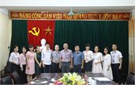

thanh niên tình nguyện
thành phố hcm ra quân chiến dịch đầu xuân

Nhằm giúp cán bộ, giảng viên, sinh viên được tiếp cận và nâng cao
kiến thức tiếng Pháp để bổ trợ cho hoạt động học tập cũng như nâng
cao cơ hội được du học, làm việc tại đất nước Pháp. Ngày 27/5/2019,
tại phòng họp Khoa, Khoa Ngoại ngữ - Đại học Thái nguyên đã tiếp đón
cô Axelle Huré tình nguyện viên người Pháp (TNV) của Tổ chức Hợp tác
và Phát triển (SCD) đến làm việc và tìm hiểu môi trường học tập tiếng
Pháp tại Khoa, trong đó có các hoạt động giao lưu bổ ích đối với giảng viên, sinh viên của Khoa Ngoại ngữ.